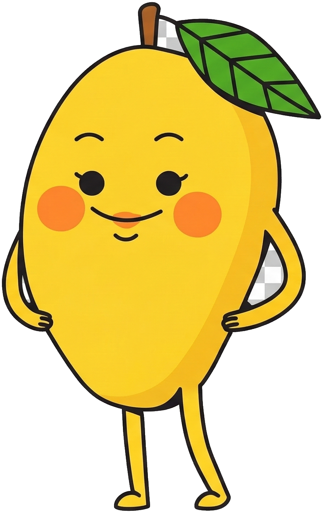
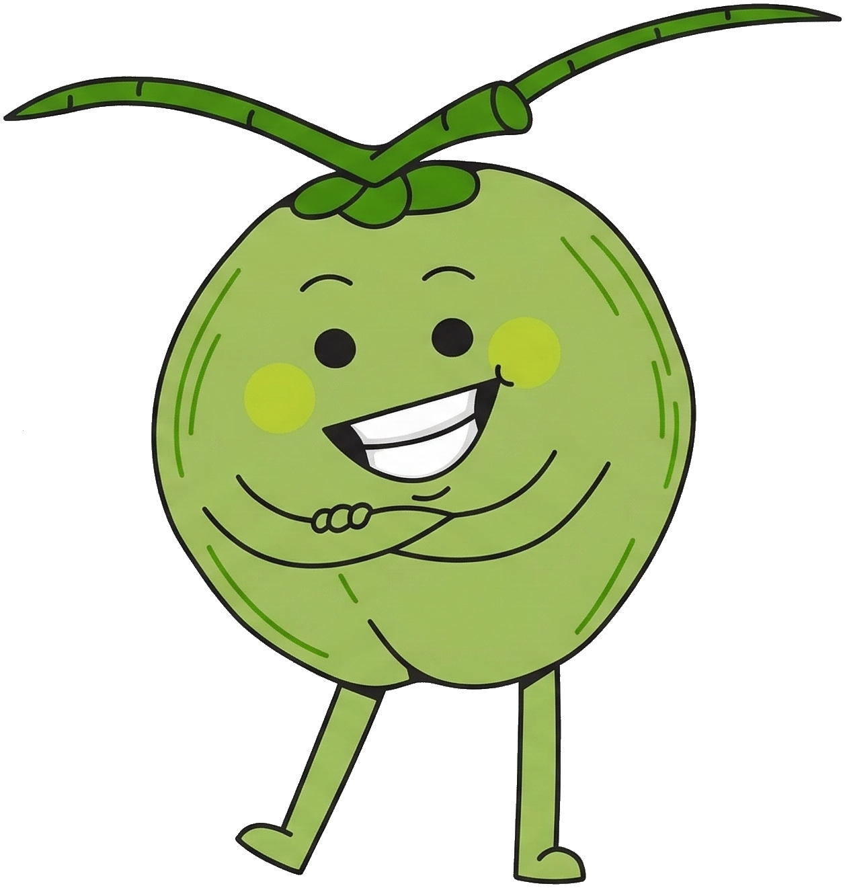

Soirée Quai Fanfare Vin Chaud
sur les Quais Tino Rossi

Prochaine soirée :
Chargement...
Données météo : Open-Meteo.com — Lieu : Quais Tino Rossi, Paris 5e
flowchart TD
Start["Consulter les previsions
pour la soiree"]
RainCheck{"Pluie annoncee
dans les previsions ?"}
ConfirmedDirect["MAINTENUE
C'est la fete !"]
Timeline{"Avant la veille
a 20h ?"}
Wait1["EN ATTENTE
Decision veille a 20h"]
Check70{"Veille 20h :
Precip. journee > 70% ?"}
Cancel1["ANNULEE"]
BeforeJ{"Avant jour J 17h ?"}
Wait2["EN ATTENTE
Confirmation a 17h"]
Check20{"Jour J 17h :
Precip. 20h-00h > 20% ?"}
Cancel2["ANNULEE"]
ConfirmedFinal["MAINTENUE"]
Start --> RainCheck
RainCheck -->|"Beau temps"| ConfirmedDirect
RainCheck -->|"Risque pluie"| Timeline
Timeline -->|Oui| Wait1
Timeline -->|Non| Check70
Check70 -->|"> 70%"| Cancel1
Check70 -->|"OK"| BeforeJ
BeforeJ -->|Oui| Wait2
BeforeJ -->|Non| Check20
Check20 -->|"> 20%"| Cancel2
Check20 -->|"OK"| ConfirmedFinal
classDef confirmed fill:#4CAF50,stroke:#2E7D32,color:#fff,font-weight:bold,stroke-width:3px
classDef cancelled fill:#E53935,stroke:#B71C1C,color:#fff,font-weight:bold,stroke-width:3px
classDef waiting fill:#FF9800,stroke:#E65100,color:#fff,font-weight:bold,stroke-width:3px
classDef decision fill:#FFFDE7,stroke:#2D3436,color:#2D3436,stroke-width:2px
classDef startNode fill:#FFF9C4,stroke:#F9A825,color:#2D3436,stroke-width:3px
class Start startNode
class RainCheck,Timeline,Check70,BeforeJ,Check20 decision
class ConfirmedDirect,ConfirmedFinal confirmed
class Cancel1,Cancel2 cancelled
class Wait1,Wait2 waiting